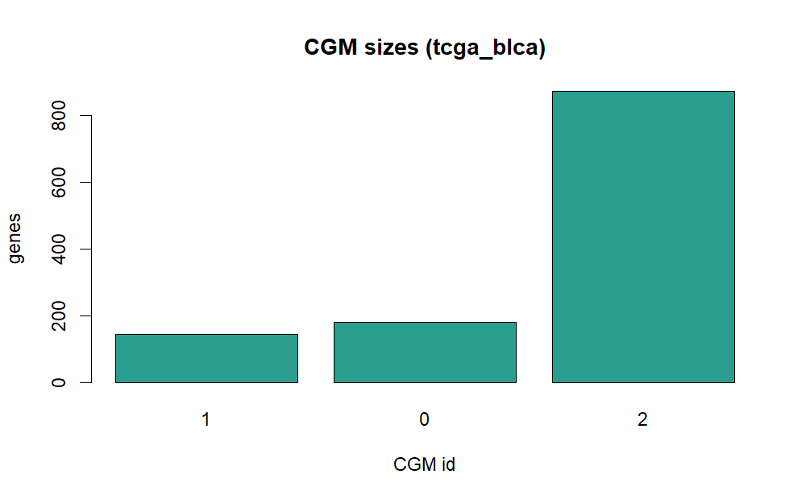
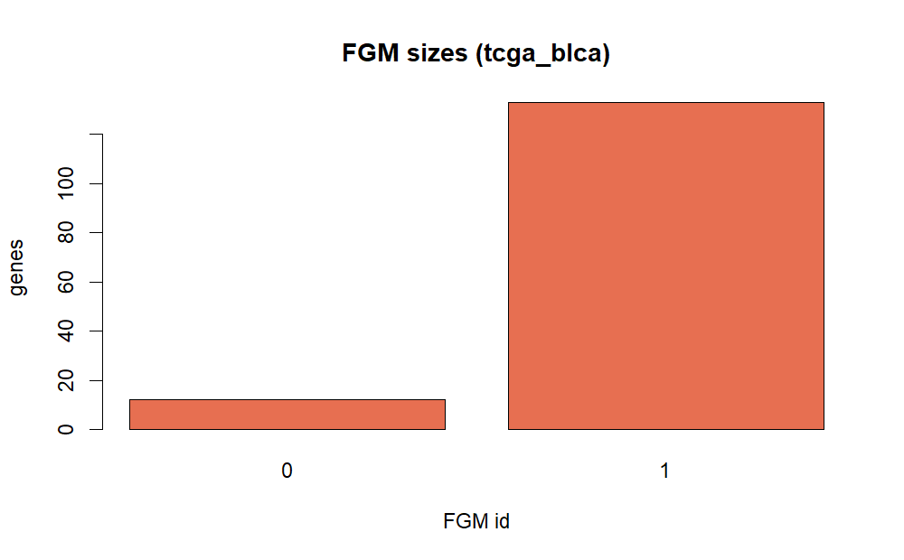

Tutorial: TCGA-BLCA real-data analysis
Source:vignettes/tutorial-tcga-blca.Rmd
tutorial-tcga-blca.RmdBackground
Bulk RNA-seq co-expression analysis often mixes strong tissue-level signals with finer immune-state signals. A single module scale can miss this hierarchy. NestedWGCNA addresses this by first identifying broad modules (CGMs), then re-normalizing and re-clustering inside each module to reveal FGM structure.
Objective
The objective of this tutorial is to run a fully reproducible, real-data NestedWGCNA workflow on TCGA-BLCA and interpret whether the two-stage design separates broad tumor programs from finer immune programs.
Data source and download
This tutorial uses an openly available TCGA-BLCA expression matrix:
- URL:
https://raw.githubusercontent.com/ilyada/NestedWGCNA/main/data/TCGA_BLCA.tsv - Samples: 406
- Genes: 20,017
The analysis script downloads the expression matrix and signature
references, runs the full R pipeline, and writes outputs under
inst/extdata/case_studies/tcga_blca/.
system("Rscript inst/scripts/run_tcga_blca_case_study.R")Methods
The executed case-study configuration is:
- Log-transform expression and keep top 1,200 variable genes.
- Run CGM discovery (
min_cluster_size = 50) withfind_cgm(). - Select an immune-like CGM by signature enrichment.
- Attempt GenFocus (
focus = "eigengene",corr_thrladder from 0.9 to 0.7,CVR_thr = 0.6). - If no INGS is established, run FGM discovery directly on the target CGM expression matrix.
- Run FGM discovery in that CGM
(
min_cluster_size = 10). - Perform hypergeometric enrichment against xCell and BostonGene signatures.
if (!is.null(summary_obj)) {
method_tbl <- data.frame(
item = c(
"samples",
"input genes",
"modeled genes",
"CGM min_cluster_size",
"FGM min_cluster_size",
"GenFocus corr_thr",
"GenFocus INGS genes"
),
value = c(
summary_obj$n_samples,
summary_obj$n_genes_input,
summary_obj$n_genes_model,
summary_obj$cgm_min_cluster_size,
summary_obj$fgm_min_cluster_size_used,
val_or_na(summary_obj$genfocus_corr_thr),
summary_obj$genfocus_ings_n
)
)
knitr::kable(method_tbl, caption = "Case-study analysis settings")
}| item | value |
|---|---|
| samples | 406 |
| input genes | 20017 |
| modeled genes | 1200 |
| CGM min_cluster_size | 50 |
| FGM min_cluster_size | 10 |
| GenFocus corr_thr | NA |
| GenFocus INGS genes | 0 |
Results
Module recovery
if (!is.null(summary_obj)) {
res_tbl <- data.frame(
layer = c("CGM", "FGM (inside target CGM)"),
modules = c(summary_obj$cgm_n_modules, summary_obj$fgm_n_modules),
assigned_genes = c(summary_obj$cgm_assigned_genes, summary_obj$fgm_assigned_genes),
noise_genes = c(summary_obj$cgm_noise_genes, summary_obj$fgm_noise_genes)
)
knitr::kable(res_tbl, caption = "Recovered modules")
}| layer | modules | assigned_genes | noise_genes |
|---|---|---|---|
| CGM | 3 | 1199 | 1 |
| FGM (inside target CGM) | 2 | 145 | 1055 |


Biological enrichment
if (!is.null(cgm_enr) && nrow(cgm_enr) > 0) {
cgm_top <- cgm_enr[order(cgm_enr$fdr), c("module", "source", "signature", "k", "K", "fdr")]
cgm_top <- head(cgm_top, 10)
knitr::kable(cgm_top, digits = 4, caption = "Top CGM enrichments")
}| module | source | signature | k | K | fdr | |
|---|---|---|---|---|---|---|
| 1 | 0 | xCell | Astrocytes_FANTOM_1 | 59 | 181 | 0 |
| 2 | 0 | xCell | Astrocytes_FANTOM_3 | 53 | 181 | 0 |
| 3 | 0 | xCell | Astrocytes_FANTOM_2 | 44 | 181 | 0 |
| 71 | 1 | xCell | Macrophages_BLUEPRINT_2 | 15 | 145 | 0 |
| 72 | 1 | xCell | Macrophages_BLUEPRINT_3 | 15 | 145 | 0 |
| 73 | 1 | xCell | Macrophages_BLUEPRINT_1 | 14 | 145 | 0 |
| 74 | 1 | xCell | Melanocytes_FANTOM_2 | 20 | 145 | 0 |
| 75 | 1 | xCell | Macrophages M1_FANTOM_2 | 16 | 145 | 0 |
| 76 | 1 | xCell | Melanocytes_FANTOM_3 | 22 | 145 | 0 |
| 77 | 1 | xCell | Macrophages M1_BLUEPRINT_3 | 13 | 145 | 0 |
if (!is.null(fgm_enr) && nrow(fgm_enr) > 0) {
fgm_top <- fgm_enr[order(fgm_enr$fdr), c("fgm", "source", "signature", "k", "K", "fdr")]
fgm_top <- head(fgm_top, 10)
knitr::kable(fgm_top, digits = 4, caption = "Top FGM enrichments")
}| fgm | source | signature | k | K | fdr | |
|---|---|---|---|---|---|---|
| 13 | 0 | BostonGene | MHCII | 7 | 12 | 0 |
| 14 | 1 | xCell | Macrophages_BLUEPRINT_2 | 15 | 133 | 0 |
| 15 | 1 | xCell | Macrophages_BLUEPRINT_3 | 15 | 133 | 0 |
| 16 | 1 | xCell | Macrophages_BLUEPRINT_1 | 14 | 133 | 0 |
| 17 | 1 | xCell | Macrophages M1_FANTOM_2 | 16 | 133 | 0 |
| 18 | 1 | xCell | Macrophages M1_BLUEPRINT_3 | 13 | 133 | 0 |
| 19 | 1 | xCell | Macrophages M1_FANTOM_3 | 15 | 133 | 0 |
| 20 | 1 | xCell | Melanocytes_FANTOM_2 | 18 | 133 | 0 |
| 21 | 1 | xCell | CD8+ Tem_BLUEPRINT_3 | 12 | 133 | 0 |
| 22 | 1 | xCell | CD8+ Tem_HPCA_2 | 12 | 133 | 0 |
Observed structure in this run:
- CGM-3: strong stromal/mesenchymal program (Astrocytes_FANTOM signatures).
- CGM-1: epithelial/keratin program (Keratinocytes signatures).
- CGM-2: macrophage-like immune program (Macrophages_BLUEPRINT signatures).
FGM split inside CGM-2:
- FGM-0: compact MHC-II-like branch (BostonGene
MHCIIenrichment). - FGM-1: macrophage-dominant branch (Macrophages_BLUEPRINT signatures).
Discussion
The two-stage structure is supported by the output:
- Stage 1 recovered broad, high-level tissue programs.
- Stage 2 split the immune-like CGM into a small antigen-presentation branch and a larger macrophage branch.
This is exactly the expected use case for nested co-expression analysis in bulk tumors, where immune and stromal signals are often superimposed.
Interpretation
For translational analyses, these outputs can be interpreted as:
- CGM labels: macro-context (stromal vs epithelial vs immune-rich).
- FGM labels: within-context immune states that may align with antigen presentation or macrophage activity.
In this run, coexistence of an MHC-II-like FGM and a macrophage-like FGM within the same immune CGM suggests heterogeneous antigen-presentation and myeloid states across BLCA tumors.